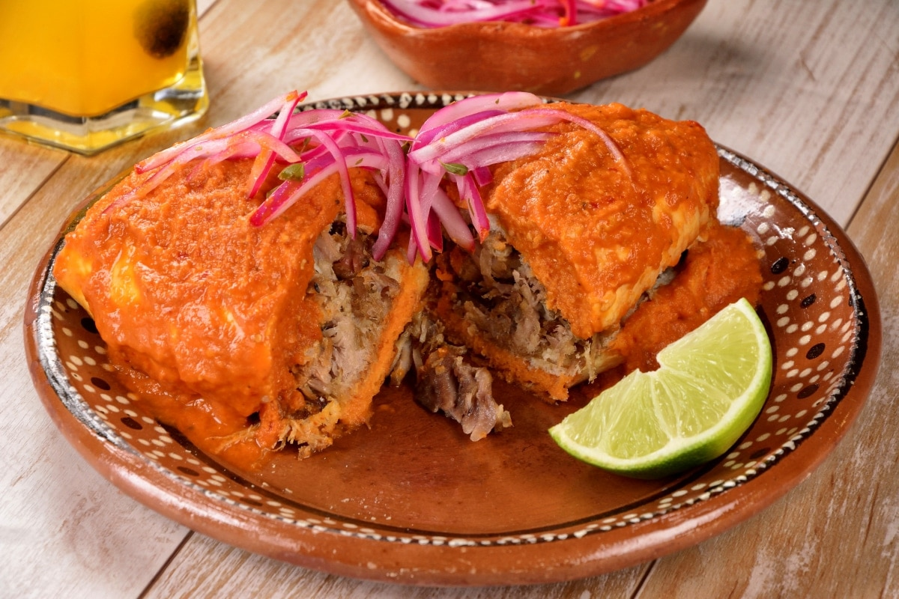

Jalisco
El ícono tapatío por excelencia
Torta Ahogada
Torta Ahogada
El ícono tapatío por excelenciaLa torta ahogada es el platillo más representativo de Guadalajara. Se elabora con birote salado — un pan de consistencia firme y crujiente con sabor ligeramente agrio — que se sumerge generosamente en salsa picante de chile de árbol de Yahualica, conocida por su aroma penetrante y picor característico.
El birote se rellena con carnitas de cerdo estilo Jalisco, se condimenta con vinagre, comino y ajo, y se completa con salsa de jitomate y rebanadas de cebolla desflemada en limón.
Tradición
"Las tortas ahogadas recibieron su nombre porque tradicionalmente se sumergían en chile hasta que salieran burbujas."